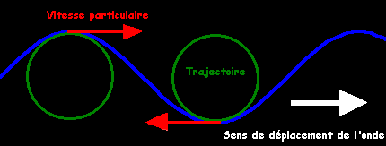

THÉORIE
Sans rentrer dans les détails, voici les principales étapes de notre approche.
Ces considérations simples de mécanique des fluides sont du niveau de math Spé.
Elles nous permettent d'obtenir des équations explicites de la trajectoire d'une particule d'eau au passage
d'une vague par grand fond et pour de petites amplitudes.
a) Hypothèses :
- Écoulement parfait, incompressible, homogène, P₀ = cst, pas de tension superficielle, A << L
b) Approximations :
- A << L → Dv/Dt = dv/dt
- rot v = cst = 0 (Lagrange)
- v = grad Φ
- Linéarisation (cadre d’Airy)
- T = cst
c) Équations :
- PFD → grad (Φ + gz + P/m) = 0
- Bilan de masse → div v = 0
- On pose Φ = f(z) g(kx-wt)
- f(z) = a sinh kz + b cosh kz
- g(kx-wt) = cos(kx-wt)
d) Conditions limites :
- Vitesse verticale nulle au fond
- Surface P = P₀
- a = b th(kh)
- Relation de dispersion : w² = g k th(kh)
e) Trajectoires :
- x = x₀ - kb / (w cosh(kh)) cosh k(z₀+h) cos(kx₀-wt)
- z = z₀ - kb / (w cosh(kh)) sinh k(z₀+h) sin(kx₀-wt)
Et donc on en conclue que la trajectoire est une ellipse (un cercle en eau très profonde).
Ceci répond bien à notre problème : il y a bien un transfert horizontal de matière !!!
